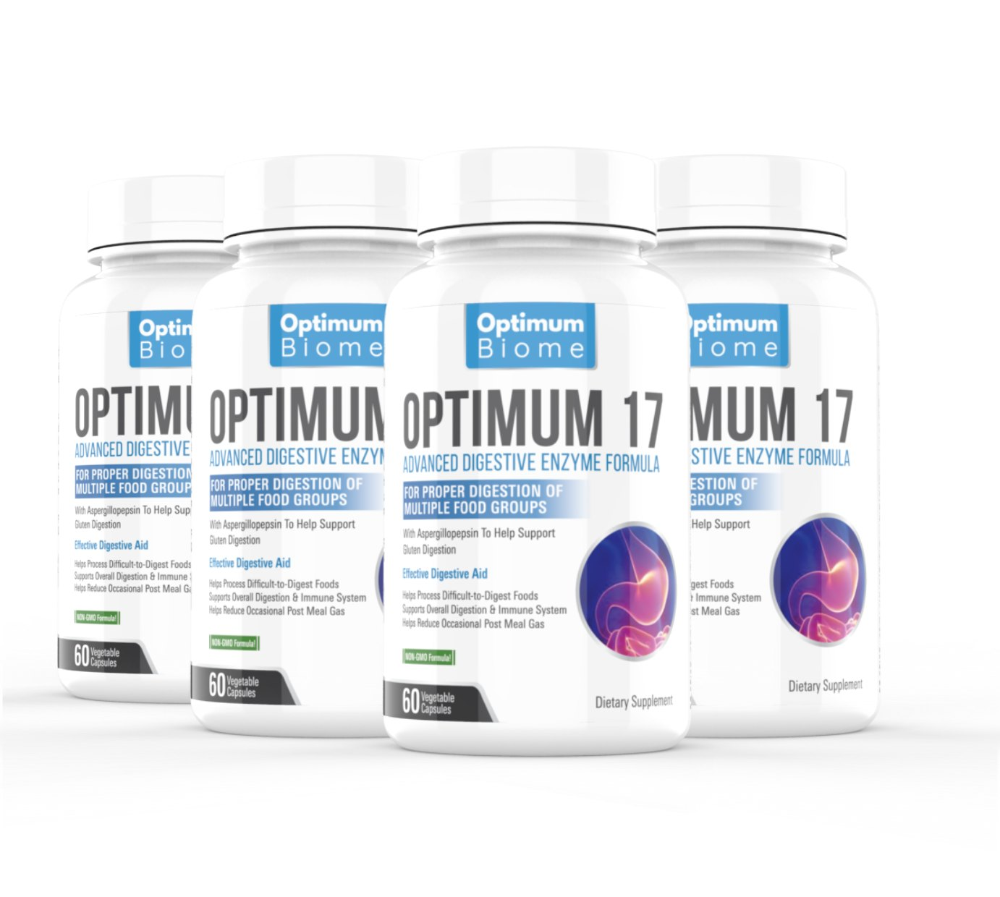
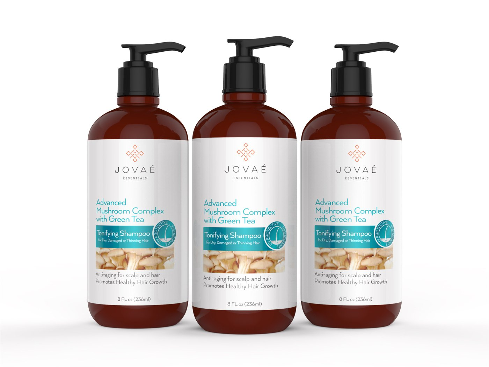
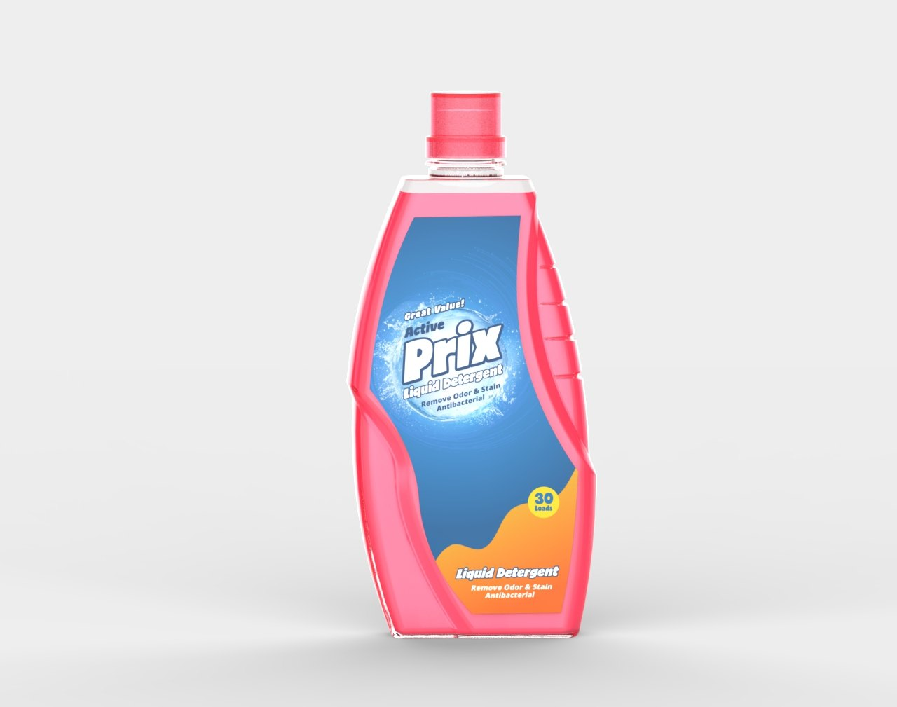
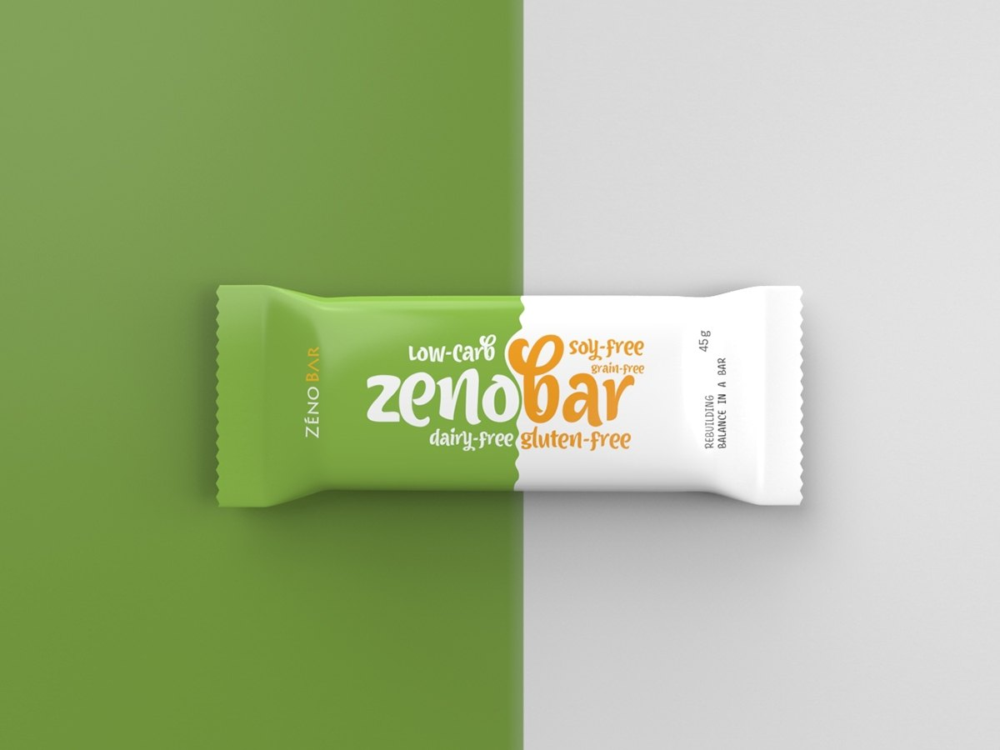
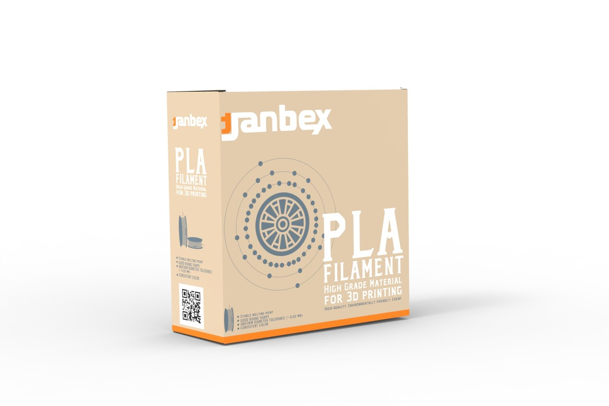
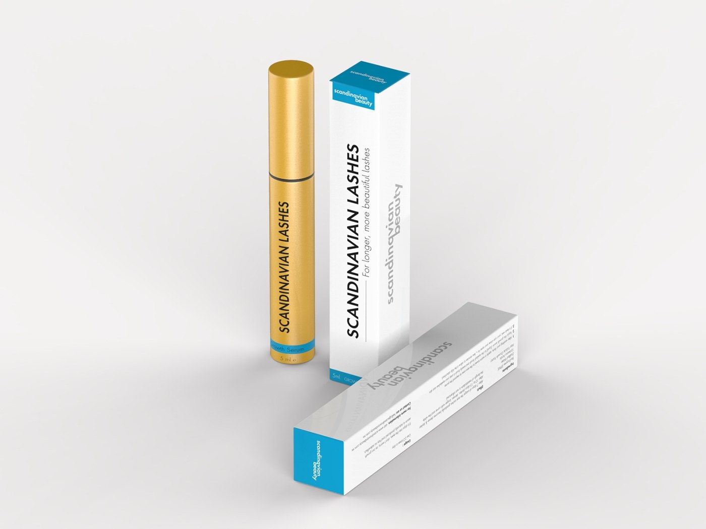
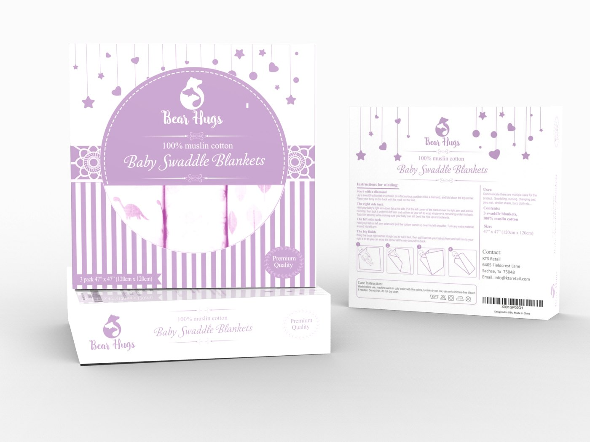
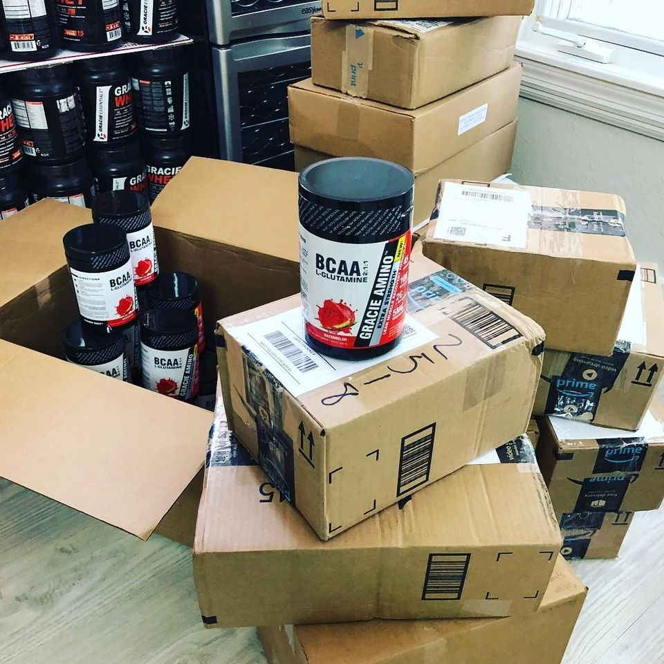
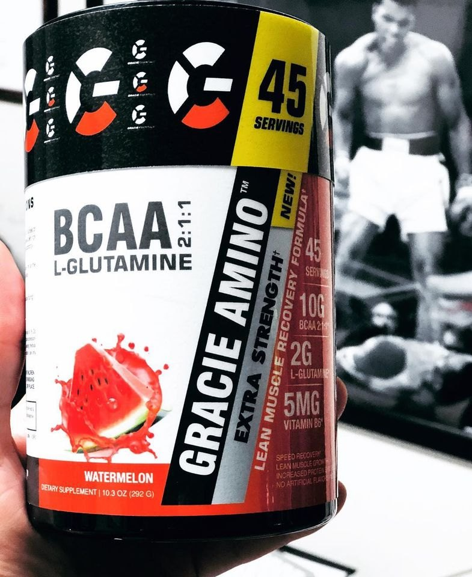

TEN YEARS.EVERYPROJECTCOUNTED.

Where we started
WHERE ITSTARTED.
01Freelance work on Fiverr
02Design contests on 99designs
03Brands across the world
04Today: Bombay Marketing
A decade of work
EVERY BRIEFWAS DIFFERENT.















What every project taught us
LESSONSWE KEEP.
01The shelf decides in seconds
02Clarity builds trust
03Details make it premium
04Great design must print well
From render to real life
FROM SCREENTO REAL HANDS.

Gracie Amino · shipped
Gracie Amino · in the gym Maxitto · Vitamin D3
Maxitto · Vitamin D3 Paipur notebooks
Paipur notebooksEVERY PROJECTTAUGHT USSOMETHING.
How we work
Discover
Understand your business & goals
Plan
Strategy, structure & timeline
Build
Design, develop & launch
Grow
Measure, improve & scale
TEN YEARS.ONE CRAFT.
bombaymarketing.in